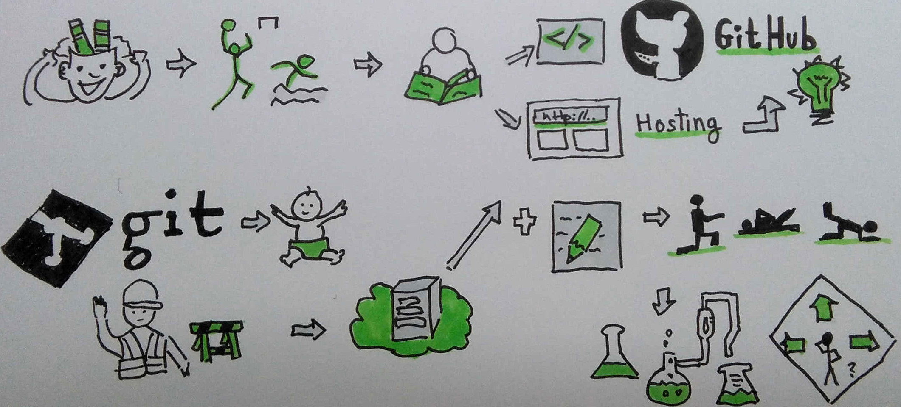
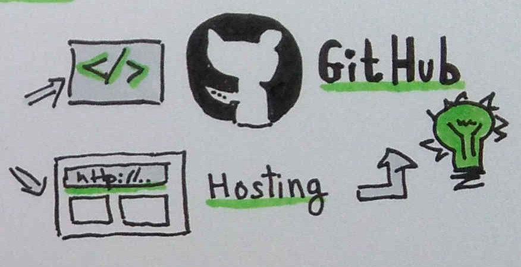
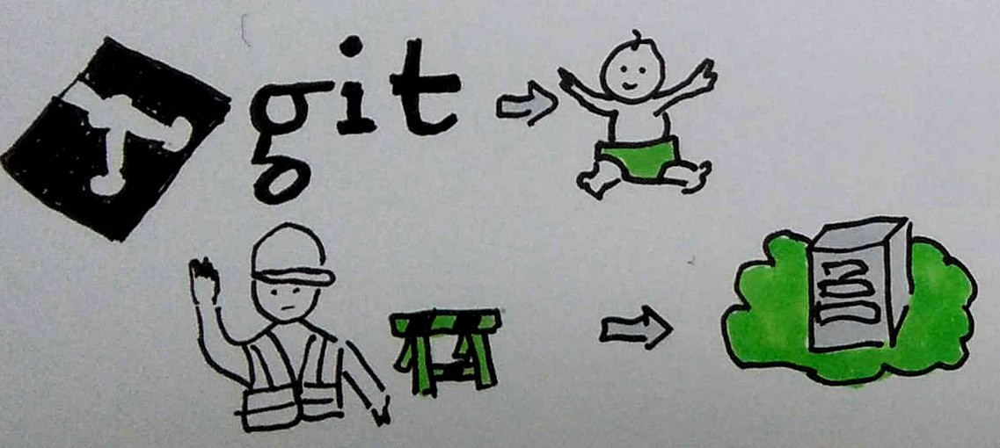
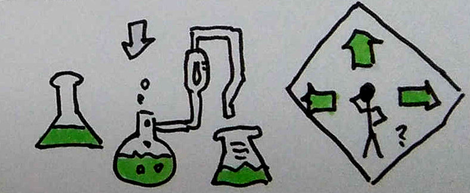

Publica tus experimentos web con GitHub
Técnica de Sketchnoting
¿Por qué surge esta charla?

GitHub
¿Qué necesitamos para empezar?
Caso de uso: Ejercicios para aprender

Experimenta con GitHub Pages
¡Gracias!
Créditos
- WebSlides es una solución open source creada por @jlantunez, @Belelros y @luissacristan. Si quieres saber más, ¡ponte en contacto!